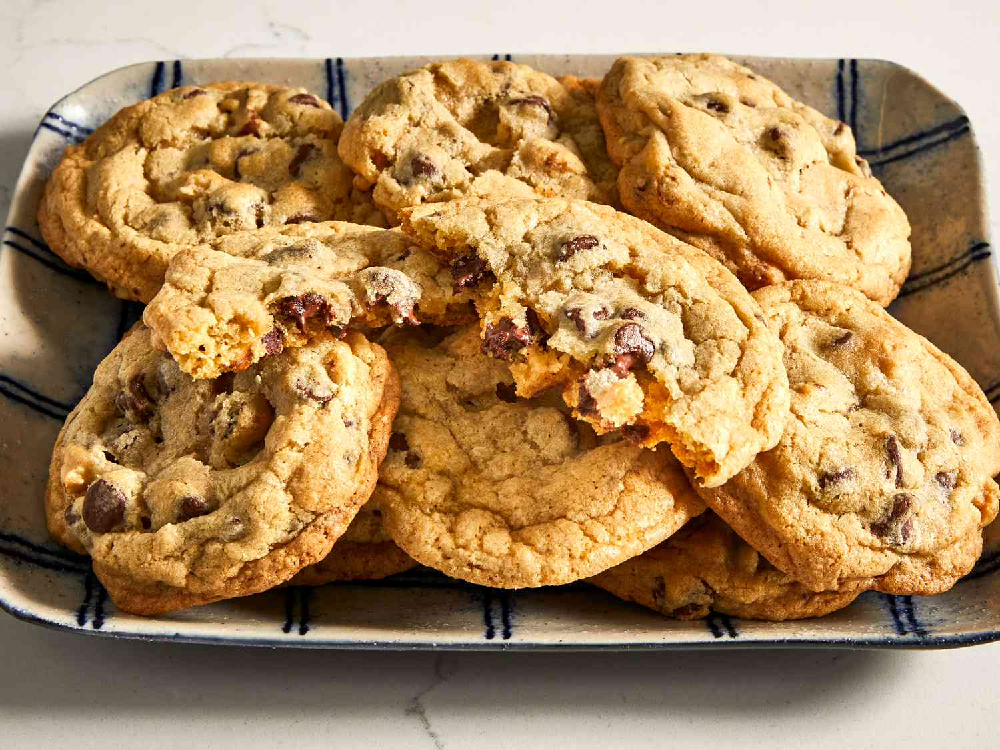

Chocolate Chip Cookies

Description
Chocolate Chip Cookies are classic, chewy cookies loaded with chocolate chips. They are easy to make and perfect for satisfying sweet cravings.
Ingredients
- 1 cup unsalted butter, softened
- 1 cup granulated sugar
- 1 cup brown sugar, packed
- 2 large eggs
- 1 teaspoon vanilla extract
- 3 cups all-purpose flour
- 1 teaspoon baking soda
- ½ teaspoon salt
- 2 cups chocolate chips
Steps
- Preheat oven to 350°F (175°C). Line baking sheets with parchment paper.
- In a large bowl, cream together butter, granulated sugar, and brown sugar until smooth.
- Beat in eggs one at a time, then stir in vanilla extract.
- In a separate bowl, whisk together flour, baking soda, and salt. Gradually add to the wet ingredients, mixing until just combined.
- Fold in chocolate chips until evenly distributed in the cookie dough.
- Drop rounded tablespoons of dough onto prepared baking sheets.
- Bake for 10-12 minutes until the edges are golden but the centers are still soft.
- Allow cookies to cool on the baking sheets for 5 minutes before transferring to a wire rack to cool completely.
Return to home page